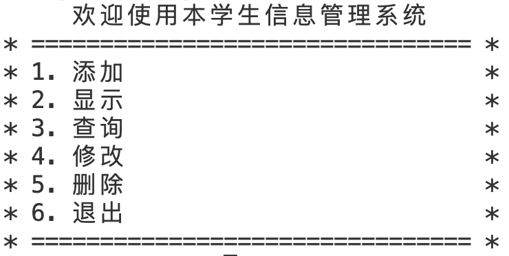

<!DOCTYPE lake>
<ul list="u7c422ef6"><li data-lake-id="u1fb7ecdc" fid="u91ab3175" id="u1fb7ecdc"><span data-lake-id="u18c1cd38" id="u18c1cd38">学员管理系统可以实现对学员的添加、全部显示、查询、修改、删除功能</span></li></ul><p data-lake-id="u493d544c" id="u493d544c" style="padding-left: 2em"></p><ul list="u517ddc80"><li data-lake-id="uac94761a" fid="u0a96c34b" id="uac94761a"><span data-lake-id="u1ee55ce5" id="u1ee55ce5">数据存储格式说明</span></li></ul><span class="yuque-card-unsupported">[codeblock]</span><ul list="u8757ea9a"><li data-lake-id="uecfc12aa" fid="u9d46d647" id="uecfc12aa"><span data-lake-id="u675e3928" id="u675e3928">示例代码</span></li></ul><span class="yuque-card-unsupported">[codeblock]</span>